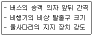
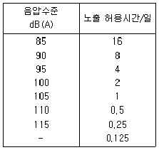
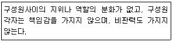

인간공학기사 (2008-07-27 기출문제)
1과목: 인간공학개론
1. 다음 중 인간의 제어 정도에 따른 인간-기계 시스템의 일반적인 분류에 속하지 않는 것은?
- 수동 시스템
- 기계화 시스템
- 감시제어 시스템
- 자동 시스템
(정답률: 89%)

2. 다음 중 신호나 정보 등의 검출성에 영향을 미치는 요인과 가장 거리가 먼 것은?
- 노출시간
- 점열속도
- 배경광
- 반응시간
(정답률: 76%)
3. 다음 중 일반적으로 입식 작업에서 작업대 높이를 정할 때 기준점이 되는 것은?
- 어깨 높이
- 팔꿈치 높이
- 배꼽 높이
- 허리 높이
(정답률: 79%)
4. 1cd 의 점광원으로부터 3m 떨어진 구면의 조도는 몇 Lux인가?
- 1/27
- 1/9
- 1/6
- 1/3
(정답률: 87%)
5. 다음 중 반응시간이 가장 빠른 감각은?
- 시각
- 미각
- 청각
- 촉각
(정답률: 90%)
6. 음의 한 성분이 다른 성분에 대한 귀의 감수성을 감소시키는 상황을 무슨 효과라 하는가?
- 은폐
- 밀폐
- 기피
- 방해
(정답률: 86%)
7. 다음 중 인간의 후각 특성에 대한 설명으로 틀린 것은?
- 후각은 특정 물질이나 개인에 따라 민감도의 차이가 있다.
- 특정한 냄새에 대한 절대적 식별 능력은 떨어진다.
- 훈련을 통하면 식별 능력을 향상시킬 수 있다.
- 후각은 냄새 존재 여부보다는 특정 자극을 식별하는데 사용되는 것이 효과적이다.
(정답률: 87%)
8. 각각의 신뢰도가 0.85인 기계 3대가 병렬로 되어 있을 경우 이 시스템의 신뢰도는 약 얼마인가?
- 0.614
- 0.850
- 0.992
- 0.997
(정답률: 53%)
9. 악력(grip strength)측정 프로그램에 의하면 악력계는 아무 것도 지지되지 않은 상태에서 악력을 측정하여야 한다고 한다. 만일, 악력검사 결과 정상 범위보다 높게 분포되어 있어 분석해 보니 악력계(gripstrength)를 책상위에 놓은 상태에서 악력을 쟀음을 알았을 때 이 실험 결과는 다음 중 어떤 기준에 문제가 있겠는가?
- 신뢰성(reliability)
- 타당성(validity)
- 상관성(correlation)
- 민감성(sensitivity)
(정답률: 70%)
10. 다음 중 [보기]와 같은 사항을 설계하고자 할 때 인체 측정 자료에 대하여 적용할 수 있는 설계원리는?

- 최대 집단치에 의한 설계 원리
- 최소 집단치에 의한 설계 원리
- 평균치에 의한 설계 원리
- 가변적 설계 원리
(정답률: 66%)
11. 반지름 5cm 레버식 조정구(ball control)를 20도 움직일 때 표시판의 눈금이 1cm 이동하였다면 조종-반응 비율은 약 얼마인가?
- 0.95
- 1.75
- 3.15
- 4.23
(정답률: 64%)
12. 다음 중 작업대 공간 배치의 원리와 가장 거리가 먼 것은?
- 기능성의 원리
- 사용 순서의 원리
- 중요도의 원리
- 오류 방지의 원리
(정답률: 78%)
13. 차를 우회전하고자 할 때 핸들을 오른쪽으로 돌리는 것은 양립성(compatibility)의 유형 중 어느 것에 해당하는가?
- 공간적 양립성
- 운동 양립성
- 개념적 양립성
- 인지적 양립성
(정답률: 70%)
14. 다음 중 1000Hz, 40dB을 기준으로 나타내는 몸과 관련된 측정단위는?
- sone
- siemens
- dB
- W
(정답률: 89%)
15. 다음 중 온도, 압력, 속도와 같이 연속적으로 변하는 변수의 대략적인 값이나 추세 등을 알고자 할 경우 가장 적절한 표시장치는?
- 묘사적 표시장치
- 추상적 표시장치
- 정량적 표시장치
- 정성적 표시장치
(정답률: 47%)
16. 윗팔을 자연스럽게 수직으로 늘어뜨린 채, 아래팔만으로 편하게 뻗어 파악할 수 있는 영역을 무엇이라 하는가?
- 최대 작업역
- 작업 공간역
- 파악 한계역
- 정상 작업역
(정답률: 79%)
17. 다음 중 실현 가능성이 같은 N개의 대안이 있을 때 총 정보량(H)를 구하는 식으로 옳은 것은?
- H=log2N
- H=logN2
- H=log2N
- H=2logN2
(정답률: 76%)
18. 다음 중 시배분(time-sharing)에 대한 설명으로 적절하지 않은 것은?
- 음악을 들으며 책을 읽는 것처럼 주의를 번갈아 가며 2가지 이상을 돌보아야 하는 상황을 말한다.
- 시배분이 필요한 경우 인간의 작업능률 은 떨어진다.
- 청각과 시각이 시배분 되는 경우에는 보통 시각이 우월하다.
- 시배분 작업은 처리해야 하는 정보의 가치수와 속도에 의하여 영향을 받는다.
(정답률: 69%)
19. 다음 중 신호검출이론(SDT)에서 반응기준 ()를 구하는 식으로 옳은 것은?
- (소음분포의 높이)×(신호분포의 높이)
- (소음분포의 높이)+(신호분포의 높이)
- (신호분포의 높이)÷(소음분포의 높이)
- (신호분포의 높이)+(소음분포의 높이)2
(정답률: 80%)
20. 다음 중 암호체계 사용상의 일반적인 지침과 가장 거리가 먼 것은?
- 정보를 암호화한 자극은 검출이 가능해야 한다.
- 모든 암호 표시는 감지장치에 의하여 다른 암호표시와 구별되어서는 안된다.
- 자극과 반응간의 관계가 인간의 기대와 모순되지 않아야 한다.
- 2가지 이상의 암호차원을 조합해서 사용하면 정보전달이 촉진된다.
(정답률: 80%)
2과목: 작업생리학
21. 작업 중 근육을 사용하는 육체적 작업에 따른 생리적 반응에 대한 설명으로 틀린 것은?
- 호흡기 반응에 의해 호흡속도와 흡기량이 증가한다.
- 작업 중 각 기관에 흐르는 혈류량은 항상 일정하다.
- 심박출량은 작업 초기부터 증가한 후 최대 작업능력의 일정 수준에서 안정된다.
- 심박수는 작업 초기부터 증가한 후 최대 작업능력의 일정 수준에서도 계속 증가한다.
(정답률: 71%)
22. 다음 중 굴곡(Flexion)에 반대되는 인체 동작을 무엇이라 하는가?
- 벌림(Abduction)
- 폄(Extension)
- 모음(Adduction)
- 하항(Pronation)
(정답률: 80%)
23. 다음 중 중추신경계의 피로 즉, 정신피로의 척도로 사용될 수 있는 것은?
- 혈압(Blood pressure)
- 근전도(Electromyogram)
- 산소 소비량(Oxygen consumption)
- 점멸융합주파수(Flicker fusion frequency)
(정답률: 66%)
24. 인체의 척추를 구성하고 있는 뼈 가운데 경추, 중추, 요추의 합은 몇 개인가?
- 19개
- 21개
- 24개
- 26개
(정답률: 75%)
25. 관절의 종류 중 어깨관절의 유형에 해당하는 것은?
- 경첩관절(hinge joint)
- 축관절(pivot joint)
- 안장관절(saddle joint)
- 구상관절(ball-and-socker joint)
(정답률: 71%)
26. 특정 작업에 대한 10분 간의 산소소비량을 측정한 결과 100L 배기량에 산소가 15%, 이산화탄소가 5%로 분석되었다. 이 때 산소소비량은 몇 L/min 인가? (단, 공기 중 산소는 21vol%, 질소는79vol%라고 한다.)
- 0.63
- 0.75
- 3.15
- 10.13
(정답률: 41%)
27. 다음 중 생명을 유지하기 위하여 필요로 하는 단위시간당 에너지량을 무엇이라 하는가?
- 에너지소비율
- 활동에너지가
- 기초대사율
- 산소소비량
(정답률: 74%)
28. 다음 중 신체의 지지와 보호 및 조형 기능을 담당하는 것은?
- 골격계
- 근육계
- 순환계
- 신경계
(정답률: 83%)
29. 다음 중 육체적 작업부하의 주관적 평가방법으로 작업자들이 주관적으로 지각한 신체적 노력의 정도를 일정한 값 사이의 척도로 평정하는 것은?
- Borg의 RPE Scale
- Flicker 지수
- Body Map
- Lifting Index
(정답률: 78%)
30. 다음 중 신경계에 대한 설명으로 틀린 것은?
- 체신경계는 평활근, 심장근에 분포한다.
- 기능적으로는 체신경계와 자율신경계로 나눌 수 있다.
- 자율신경계는 교감신경계와 부교감신경계로 세분된다.
- 신경계는 구조적으로 중추신경계와 말초신경계로 나눌 수 있다.
(정답률: 77%)
31. 소음 측정의 기준에 있어서 단위 작업장에서 소음발생 시간이 6시간 이내인 경우 발생시간 동안 등간격으로 나누어 몇 회 이상 측정하여야 하는가?
- 2회
- 3회
- 4회
- 6회
(정답률: 46%)
32. 단일자극에 의한 1회의 수축과 이완 과정을 무엇이라 하는가?
- 연축(twitch)
- 감축(tetanus)
- 긴장(tones)
- 강축(rigor)
(정답률: 68%)
33. 다음 중 인체를 전후로 나누는 면을 무엇이라 하는가?
- 횡단면
- 시상면
- 관상면
- 정중면
(정답률: 72%)
34. 다음 중 저온에서의 신체반응에 대한 설명으로 틀린 것은?
- 체표면적이 감소한다.
- 피부의 혈관이 수축된다.
- 화학적 대사작용이 감소한다.
- 근육긴장의 증가와 떨림이 발생한다.
(정답률: 75%)
35. 건강한 근로자가 부품 조립작업을 8시간 동안 수행하고 대사량을 측정한 결과 산소 소비량이 분당 1.5L 이었다. 이 작업에 대하여 8시간의 총 작업시간 내에 포함되어야 하는 휴식시간은 몇 분인가? (단, 이 작업의 권장평균 에너지소모량은 5kcal/min. 휴식시의 에너지소비량은 1.5kcal/min이며, Murrell의 방법을 적용한다.)
- 60분
- 72분
- 144분
- 200분
(정답률: 57%)
36. 다음 중 소음에 의한 청력손실이 가장 크게 발생하는 주파수 대역은?
- 500Hz
- 1000Hz
- 2000Hz
- 4000Hz
(정답률: 91%)
37. 다음 중 산소 최대섭취능력(MAP. maxinum aerobic power)에 대한 설명으로 틀린 것은?
- 개인의 MAP가 클수록 순환기 계통의 효능이 크다.
- MAP수준에서는 에너지 대사가 주로 호기적(aerobic)으로 일어난다.
- MAP를 직접 측정하는 방법은 트레드밀(treadmill)이나 자전거 에르고미터(ergometer)에서 가능하다.
- MAP 이란 일의 속도가 증가하더라도 산소 섭취량이 더 이상 증가하지 않는 일정하게 되는 수준이다.
(정답률: 58%)
38. A 작업장에서 근무하는 근로자가 85dB(A)에 4시간, 90dB(A)에 4시간 동안 노출되었다. 음압수준별 허용시간이 다음 [표]와 같을 때 누적소음노출지수(%)는 얼마인가?

- 55%
- 65%
- 75%
- 85%
(정답률: 72%)
39. 강도 높은 작업을 일정 시간 동안 수행한 후 회복기에서 근육에 추가로 산소가 소비되는 것을 무엇이라 하는가?
- 산소결손
- 산소소비량
- 산소부채
- 산소요구량
(정답률: 88%)
40. 다음 중 근력(strength)과 지구력(endurance)에 대한 설명으로 틀린 것은?
- 지구력(endurance)이란 근육을 사용하여 간헐적인 힘을 유지할 수 있는 활동을 말한다.
- 정적근력(static strength)을 등척력(isometric strength)이라 한다.
- 동적근력(dynamic strength)을 등속력(isokinetic strength)이라 한다.
- 근육이 발휘하는 힘은 근육의 최대자율수축(MVC, maximum voluntary contraction)에 대한 백분율로 나타낸다.
(정답률: 61%)
3과목: 산업심리학 및 관계법규
41. 다음 중 매슬로우(A.H. Maslow)의 인간욕구 5단계를 올바르게 나열한 것은?
- 생리적 욕구→사회적 욕구→안전 욕구→자아 실현의 욕구→존경의 욕구
- 생리적 욕구→안전 욕구→사회적 욕구→자아 실현의 욕구→존경의 욕구
- 생리적 욕구→안전 욕구→사회적 욕구→존경의 욕구→자아 실현의 욕구
- 생리적 욕구→사회적 욕구→안전 욕구→존경의 욕구→자아 실현의 욕구
(정답률: 60%)
42. 다음 중 Swain의 인간 오류 분류에서 성격이 다른 오류 형태는?
- 선택(selection)오류
- 순서(sequence)오류
- 누락(omission)오류
- 시간지연(timing)오류
(정답률: 48%)
43. 다음 중 인간 신뢰도에 대한 설명으로 옳은 것은?
- 인간 신뢰도는 인간의 성능이 특정한 기간 동안 실수를 범하지 않을 확률로 정의된다.
- 반복되는 이산적 직무에서 인간실수확률은 단위시간당 실패수로 표현된다.
- THERP는 완전 독립에서 완전 정(正)종속까지의 비연속으로 종속정도에 따라 3수준으로 분류하여 직무의 종속성을 고려한다.
- 연속적 직무에서 인간의 실수율이 불변(stationary)이고, 실수과정이 과거와 무관(independent)하다면 실수과정은 베르누이 과정으로 묘사된다.
(정답률: 72%)
44. 인간의 성향을 설명하는 맥그리거의 X, Y 이론에 따른 관리처방으로 옳은 것은?
- Y 이론에 의한 관리처방으로 경제적 보상체제를 강화한다.
- X 이론에 의한 관리처방으로 자기 실적을 스스로 평가하도록 한다.
- X 이론에 의한 관리처방으로 여러 가지 업무를 담당하도록 하고, 권한을 위임하여 준다.
- Y 이론에 의한 관리처방으로 목표에 의한 관리방식을 채택한다.
(정답률: 60%)
45. 주의(attention)에는 주기적으로 부주의의 리듬이 존재한다는 것을 주의의 특징 중 무엇에 해당하는가?
- 선택성
- 방향성
- 대칭성
- 변동성
(정답률: 78%)
46. 다음 중 집단규범의 정의를 가장 적절하게 설명한 것은?
- 조직 내 구성원의 행동통제를 위해 공식적으로 문서화한 규칙이다.
- 집단에 의해 기대되는 행동의 기준을 비공식적으로 규정하는 규칙이다.
- 상사의 명령에 의해 공식화된 업무 수행 방식이나 절차를 규정한 방식이다.
- 구성원의 행동방식에 대한 회사의 공식화된 규칙과 절차이다.
(정답률: 55%)
47. 재해 발생에 관한 하인리히(H.W. Heinrich)의 도미노 이론에서 제시된 5가지 요인에 해당하지 않는 것은?
- 개인적 결함
- 불안전한 행동 및 상태
- 제어의 부족
- 재해
(정답률: 64%)
48. 다음 중 안전대책의 중심적인 내용이라 볼 수 있는 “3E"에 포함되지 않는 것은?
- Engineering
- Environment
- Education
- Enforcement
(정답률: 69%)
49. 과도로 긴장하거나 감정 흥분시의 의식수준 단계로 대뇌의 활동력은 높지만 냉정함이 결여되어 판단이 둔화되는 의식 수준단계는?
- phase Ⅰ
- phase Ⅱ
- phase Ⅲ
- phase Ⅳ
(정답률: 85%)
50. 작업자의 휴먼에러 발생확률이 0.⑤로 일정하고, 다른 작업과 독립적으로 실수를 한다고 가정할 때, 8시간동안 에러의 발생없이 작업을 수행할 확률은 약 얼마인가?
- 0.60
- 0.67
- 0.86
- 0.95
(정답률: 53%)
51. 다음 중 집단간 갈등의 원인으로 볼 수 없는 것은?
- 집단간 목표의 차이
- 제한된 자원
- 집단간의 인식 차이
- 구성원들간의 직무 순환
(정답률: 78%)
52. 집단 내에서 권한의 행사가 외부에 의하여 선출, 임명된 지도자에 의한 경우는?
- 멤버십
- 헤드십
- 리더십
- 매니저십
(정답률: 81%)
53. 제조물책임법상 결함의 종류에 해당하지 않는 것은?
- 제조상의 결함
- 설계상의 결함
- 표시상의 결함
- 사용상의 결함
(정답률: 80%)
54. 다음 중 관리 그리드 모형(management grid model)에서 제시한 리더십의 유형에 대한 설명으로 틀린 것은?
- (1.1)형은 과업과 인간관계 유지 모두에 관심을 갖지 않는 무관심형이다.
- (5.5)형은 과업과 인간관계 유지에 모두 적당한 정도의 관심을 갖는 중도형이다.
- (9.9)형은 과업과 인간관계 유지의 모두에 관심이 높은 이상형으로서 팀형이다.
- (9.1)형은 인간에 대한 관심은 높으나 과업에 대한 관심은 낮은 인기형이다.
(정답률: 83%)
55. FTA 도표에서 입력사상 중 어느 하나라도 발생하면 출력사상이 발생되는 논리조작은?
- OR gate
- AND gate
- NOT gate
- NOR gate
(정답률: 89%)
56. NIOSH 의 직무 스트레스 모형에서 직무 스트레스 요인을 크게 작업요인, 조직요인, 환경요인으로 나눌 때 다음 중 환경요인에 해당하는 것은?
- 조명, 소음, 진동
- 가족상황, 교육상태, 결혼상태
- 작업 부하, 작업 속도, 교대 근무
- 역할 갈등, 관리 유형, 고용 불확실
(정답률: 87%)
57. 다음 중 스트레스에 대한 설명으로 틀린 것은?
- 지나친 스트레스를 지속적으로 받으면 인체는 자기 조절능력을 상실할 수 있다.
- 위협적인 환경특성에 대한 개인의 반응이라고 볼 수 있다.
- 스트레스 수준은 작업 성과와 정비례의 관계에 있다.
- 적정수준의 스트레스는 작업성과에 긍정적으로 작용할 수 있다.
(정답률: 82%)
58. 다음 중 상해 종류에 해당하지 않는 것은?
- 협착
- 골절
- 중독ㆍ질식
- 부종
(정답률: 67%)
59. 검사업무를 수행하는 작업자가 조립라인에서 볼 베어링을 검사할 때, 총 6000개의 베어링을 조사하여 이 중 400개를 불량품으로 조사하였다. 그러나 배치(batch)에는 실제로 1200개의 불량 베어링이 있었다면 이 검사 작업자의 인간 신뢰도는 약 얼마인가?
- 0.13
- 0.20
- 0.80
- 0.87
(정답률: 46%)
60. 다음 내용을 비통제의 집단행동 중 어느 것에 해당하는가?

- 군중(crowd)
- 페닉(panic)
- 모브(mob)
- 심리적 전염(mantal epidenic)
(정답률: 44%)
4과목: 근골격계질환 예방을 위한 작업관리
61. 다음 중 문제분석도구에 관한 설명으로 틀린 것은?
- 파레토 차트(pareto chart)는 문제의 인자를 파악하고 그것들이 차지하는 비율을 누적분포의 형태로 표현한다.
- 특성요인도는 바람직하지 못한 사건이나 문제의 결과를 물고기의 머리로 표현하고 그 결과를 초래하는 원인을 인간, 기계, 방법, 자재, 환경 등의 종류로 구분하여 표시한다.
- 간트 차트(Gant chart)는 여러 가지 활동 계획의 시작시간과 예측 완료시간을 병행하여 시간축에 표시하는 도표이다.
- PERT(Program Evalution and Review Technique)는 어떤 결과의 원인을 역으로 추적해나가는 방식의 분석도구이다.
(정답률: 84%)
62. 다음 중 NLE(NIOSH Lifting Equation)의 변수와 결과에 대한 설명으로 틀린 것은?
- 수평거리 요인이 변수로 작용한다.
- LI(들기지수) 값이 1이상이 나오면 안전하다.
- 개정된 공식에서는 허리의 비틀림도 포함되어있다.
- 권장무게한계(RWL)의 최대치는 23kg이다.
(정답률: 74%)
63. 다음 중 근골격계 부담작업에 해당하는 것은?
- 25kg 이상의 물체를 하루에 10회 이상드는 작업
- 10kg 이상의 물체를 하루에 15회 이상무릎 아래에서 드는 작업.
- 3.5kg 이상의 물건을 하루에 총 2시간이상 지지되지 않은 상태에서 한 손으로 드는 작업
- 하루에 총 1시간 이상 쪼그리고 앉거나 무릎을 굽힌 자세에서 이루어지는 작업
(정답률: 78%)
64. 다음 중 서블릭(Therblig)에 대한 설명으로 옳은 것은?
- 작업측정을 통한 시간 산출의 단위이다.
- 빈손이동(TE)은 비효율적 서블릭이다.
- 카메라 분석을 통하여 파악할 수 있다.
- 21가지의 기본동작을 분류하여 기호화한 것이다.
(정답률: 43%)
65. 다음 중 표준시간에 대한 설명으로 적절하지 않는 것은?
- 숙련된 작업자가 특정의 작업 페이스(pace)로 수행하는 작업시간의 개념이다.
- 표준시간에는 여유율의 개념이 포함되어 있다.
- 표준시간에는 수행도 평가 (Performance Rating) 값이 포함되어 있다.
- 이론상으로는 작업시간을 실제로 측정하지 않아도 표준시간을 결정할 수 있다.
(정답률: 48%)
66. 다음 중 근골격계질환 예방관리 프로그램의 일반적 구성요소로 볼 수 없는 것은?
- 유해요인조사
- 작업환경개선
- 의학적 관리
- 집단검진
(정답률: 70%)
67. 다음 작업관리 용어 중 그 성격이 다른 것은?
- 공정분석
- 동작연구
- 표준자료
- 경제적인 작업방법
(정답률: 36%)
68. 어느 조립작업의 부품 1개 조립당 평균관측 시간이 1.5분, rating 계수가 110%외경법에 의한 일반 여유율이 20%라고 할 때, 외경법에 의한 개당 표준시간과 8시간 작업에 따른 총 일반여유시간은 얼마인가?
- 개당 표준시간:1.98분, 총 일반여유시간:80분
- 개당 표준시간:1.65분, 총 일반여유시간:400분
- 개당 표준시간:1.65분, 총 일반여유시간:80분
- 개당 표준시간:1.98분, 총 일반여유시간:400분
(정답률: 35%)
69. 다음 중 작업관리의 문제해결 절차를 올바르게 나열한 것은?
- 연구대상의 선정→작업방법의 분석→분석자료의 검토→개선안의 수립 및 도입→확인 및 재발방지
- 연구대상의 선정→개선안의 수립 및 도입→분석자료의 검토→작업방법의 분석→확인 및 재발방지
- 개선안의 수립 및 도입→연구대상의 선정→작업방법의 분석→분석자료의 검토→확인 및 재발방지
- 분석자료의 검토→연구대상의 선정→개선안의 수립 및 도입→작업방법의 분석→확인 및 재발방지
(정답률: 81%)
70. 다음 중 개선의 ECRS에 대한 내용으로 옳은 것은?
- Economic-경제성
- Combine-결합
- Reduce-절감
- Speciflcation-규격
(정답률: 61%)
71. 다음 중 작업 분석시 문제분석 도구로 적합하지 않은 것은?
- 작업공정도
- 다중활동분석표
- 서블릭 분석
- 간트 차트
(정답률: 62%)
72. 다음 중 팔꿈치 부위에 발생하는 근골격계질환의 유형에 해당되는 것은?
- 수근관 증후군
- 바를텐베르그 증후군
- 외상 과염
- 추간판 탈출증
(정답률: 73%)
73. PTS법을 스톱워치법과 비교하였을 때 PTS법의 장점으로 될 수 없는 것은?
- 레이팅을 하여 정도를 높인다.
- 작업방법만 알면 시간 산출이 가능하다.
- 표준자료를 쉽게 작성할 수 있다.
- 작업방법에 대한 상세 기록이 남는다.
(정답률: 58%)
74. OWAS 자세평가에 의한 조치수준 중 가까운 미래에 작업자세의 교정이 필요한 경우에 해당되는 것은?
- 수준 1
- 수준 2
- 수준 3
- 수준 4
(정답률: 66%)
75. 여러 개의 스패너 중 1개를 선택하여 고르는 것을 의미하는 서블릭 기호는?
- ST
- H
- P
- PP
(정답률: 77%)
76. 다음 중 상완, 전완, 손목을 그룹 A로, 목, 상체 다리를 그룹 B로 나누어 측정, 평가하는 유해요인의 평가기법은?
- NIOSH 들기 지수
- OWAS
- RULA
- REBA
(정답률: 74%)
77. 동작 경제의 원칙 중 작업장의 배치에 관한 원칙에 해당 하는 것은?
- 두 손의 동작은 같이 시작하고 같이 끝나도록 한다.
- 손의 동작은 완만하게 연속적인 동작이 되도록 한다.
- 두 팔의 동작을 서로 반대 방향으로 대칭적으로 움직인다.
- 공구, 재료 및 제어장치는 사용위치에 가까이 두도록 한다.
(정답률: 75%)
78. 다음 중 영상표시단말기(VDT) 취급 근로자의 작업자세로 적절하지 않은 것은?
- 화면상단보다 눈높이가 낮아야 한다.
- 화면상의 시야범위는 수평선상에서 10~15° 밑에 오도록 한다.
- 화면과의 거리는 최소 40cm 이상이 확보되어야 한다.
- 윗팔(UPPER ARM)은 자연스럽게 늘어뜨리고, 팔꿈치의 내각은 90° 이상이 되어야 한다.
(정답률: 46%)
79. 다음 중 근골격계질환의 일반적인 발생원인과 가장 거리가 먼 것은?
- 부자연스러운 작업자세
- 과도한 힘의 사용
- 짧은 주기의 반복적인 동작
- 보호장구의 미착용
(정답률: 79%)
80. 다음 중 자세에 관한 수공구의 개선 사항으로 틀린 것은?
- 손목을 곧게 펴서 사용하도록 한다.
- 반복적인 손가락 동작을 방지하도록 한다.
- 지속적인 정적근육 부하를 방지하도록 한다.
- 정확성이 요구되는 작업은 파워그립을 사용하도록 한다.
(정답률: 64%)